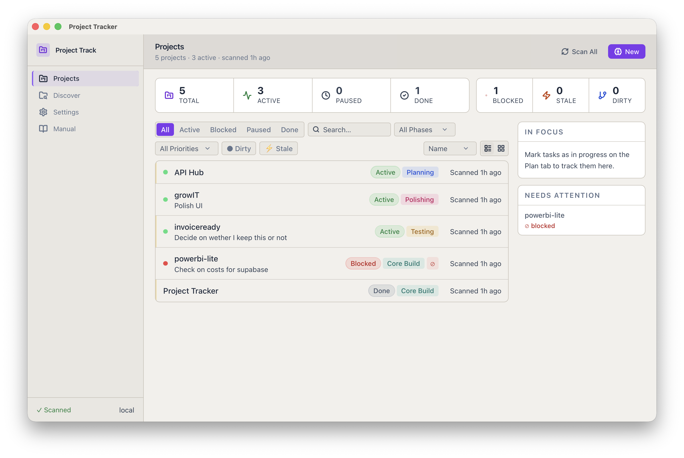
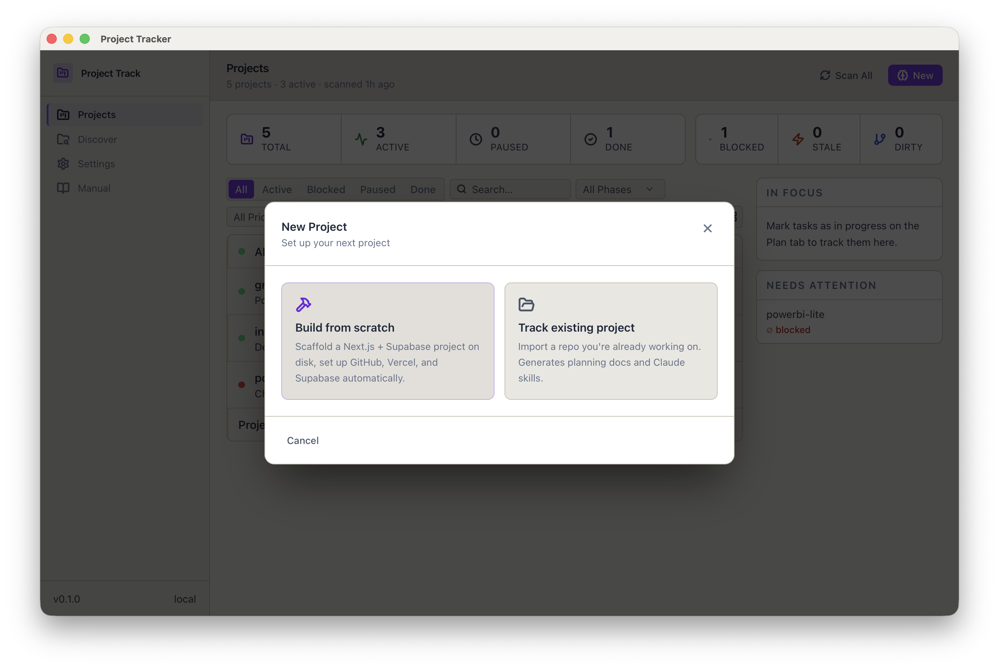
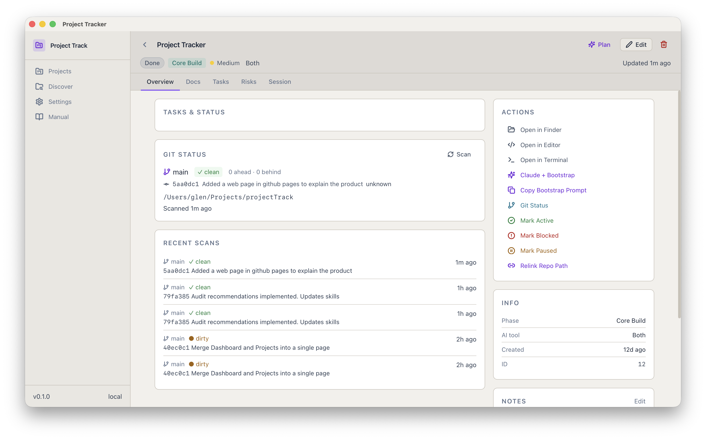

What Project Track is for
Project Track exists because AI-assisted development works much better when a project starts with clear context, clear rules, and a repeatable structure. Without that, Claude can still write code, but it is more likely to drift, forget important constraints, or build the wrong thing neatly.
Start better
Project Track helps you create a project that is Claude-ready from day one instead of bolting documentation and instructions on afterwards.
Guide Claude properly
It generates the files and skills that give Claude the context it needs about project purpose, architecture, style, testing, and chunked implementation.
Keep development controlled
The workflow pushes work into small reviewed chunks so the project stays understandable and does not become a giant AI splat of code and guesswork.
Track project health
Beyond setup, Project Track is meant to become the place where audits, findings, tasks, and project progress all live together.
How it is meant to work
The core idea is simple: one New Project flow that creates the technical scaffold and the Claude guidance pack together. That makes the project immediately usable instead of half-set-up.
1. Choose New Project
Start from the dashboard and pick the main project type, starter template, and optional stack add-ons.
2. Enter project basics
Add the project name, short description, goal, constraints, preferred coding style, and preferred UI direction.
3. Generate everything together
Project Track scaffolds the project, creates the project record, writes the markdown files, creates the Claude skills, and returns you to a ready-to-work setup.
The New Project flow
The New Project button is the heart of Project Track. Its job is not just to create a folder; it is to create a project that Claude can work in properly.
Form inputs
- Project name
- Short description
- Project type
- Starter template
- Optional stack add-ons
- Main goal and constraints
- Preferred coding style and UI style
- Git repo and Claude skills options
Progress tracking
- Create project folder
- Create base file structure
- Generate markdown docs
- Generate Claude skills
- Generate starter prompt
- Initialise git repo
- Save project to app state/database
End result
- A scaffolded project
- A linked project record in Project Track
- Claude-ready docs and skills inside the repo
- A clear start point for working with Claude in chunks
The Claude files that get created
These files are the real operating system for AI-assisted development. They do not exist to look organised. They exist because Claude performs much better when the project explains itself properly.
project-name/
├─ CLAUDE.md
├─ PROJECT_BRIEF.md
├─ PRODUCT_REQUIREMENTS.md
├─ TECHNICAL_SPEC.md
├─ TASKS.md
├─ DECISION_LOG.md
├─ SESSION_LOG.md
├─ RISKS_ASSUMPTIONS_DEPENDENCIES.md
├─ PROJECT_STAGE.md
├─ PROJECT_START_PROMPT.md
├─ README.md
└─ .claude/
└─ skills/
├─ testing-discipline/
│ └─ SKILL.md
├─ ui-readability/
│ └─ SKILL.md
├─ feature-chunking/
│ └─ SKILL.md
└─ codebase-audit/
└─ SKILL.mdWhat each markdown file is for
The files below are not optional decoration. In practice, they are what stop a Claude-assisted project from becoming vague, forgetful, or inconsistent.
CLAUDE.md
Purpose: the standing operating guide for Claude in this repo.
Contains: project overview, current focus, architecture summary, key files, conventions, testing expectations, UI direction, and when to use skills.
Why it matters: this is the first place Claude should orient itself. It holds the always-on rules that apply almost every session.
PROJECT_BRIEF.md
Purpose: explains what the project is and why it exists.
Contains: overview, problem statement, goals, non-goals, success criteria, constraints.
Why it matters: stops Claude from drifting away from the real business purpose.
PRODUCT_REQUIREMENTS.md
Purpose: defines what the product needs to do.
Contains: user stories, functional requirements, nice-to-haves, out-of-scope notes.
Why it matters: keeps feature work tied to real requirements rather than impulse coding.
TECHNICAL_SPEC.md
Purpose: explains how the project should be built.
Contains: architecture, stack, major components, data model, key flows, dependencies.
Why it matters: gives Claude a target architecture so it does not invent one every few prompts.
TASKS.md
Purpose: the practical task list for current work.
Contains: backlog, current tasks, next tasks, done items.
Why it matters: helps keep work chunked and prevents Claude from trying to solve the whole universe in one go.
DECISION_LOG.md
Purpose: records important choices and their rationale.
Contains: decision, context, options considered, rationale, consequences.
Why it matters: stops the project from forgetting why key decisions were made.
SESSION_LOG.md
Purpose: a running history of recent work.
Contains: session summary, what changed, what is next.
Why it matters: improves continuity between Claude sessions and human review.
RISKS_ASSUMPTIONS_DEPENDENCIES.md
Purpose: captures uncertainty and external constraints.
Contains: risks, assumptions, dependencies, unresolved questions.
Why it matters: keeps uncertainty visible instead of letting it hide under confident-looking output.
PROJECT_STAGE.md
Purpose: says where the project currently sits in its lifecycle.
Contains: current stage, completed stages, next stage, stage goals, exit criteria.
Why it matters: helps Claude understand whether the job is discovery, scaffolding, build, polish, testing, or handover.
PROJECT_START_PROMPT.md
Purpose: a copy-ready session opener for Claude.
Contains: instructions to read the right docs first, understand the current state, and work in controlled chunks.
Why it matters: gives a reliable start point without rewriting the same prompt every time.
README.md
Purpose: a normal project entry point for humans and tools.
Contains: high-level summary, setup notes, repo basics.
Why it matters: keeps the repo understandable beyond Claude-specific context.
The Claude skills that get created
Project Track deliberately keeps the skill set small. The rule is simple: put always-on rules in CLAUDE.md, and use skills for reusable workflows or specialist checks that apply when relevant.
testing-discipline
Purpose: keeps testing honest.
What it does: makes Claude separate build/type checks, manual testing, automated tests, and limitations.
Why it is useful: it stops “it compiles” from being treated as “it is tested”.
ui-readability
Purpose: improves readability and contrast.
What it does: reminds Claude to check pills, badges, chips, small text, light mode, dark mode, and perceived contrast.
Why it is useful: it prevents the UI becoming pretty but hard to read.
feature-chunking
Purpose: breaks work into controlled chunks.
What it does: makes Claude read the code first, identify unknowns, propose chunking, avoid over-refactoring, and report each chunk cleanly.
Why it is useful: it reduces chaos and keeps human review realistic.
codebase-audit
Purpose: runs structured project audits.
What it does: makes Claude audit by category, list files reviewed, distinguish confirmed issues from likely ones, and score only after full review.
Why it is useful: it makes audits more believable, less dramatic, and more useful as a roadmap.
Why these files and skills are important
In practice, they are close to imperative if you want Claude to be consistently useful on a real project.
Without them, Claude has weak context
Claude can still write code, but it is much more likely to guess architecture, forget constraints, invent scope, or work against the real purpose of the project.
They reduce repeated prompting
Instead of rewriting the same instructions every session, the project itself holds the working context and reusable workflows.
They improve continuity
New sessions work better when the project explains itself clearly. Decision logs, session logs, and stage files stop important context from evaporating.
They make review more realistic
Chunking, testing, and audit skills make Claude’s output more inspectable and less likely to hide behind vague confidence.
Screenshots
A few views that show the direction of Project Track: project setup, Claude-ready structure, and the quality and audit workflow it is growing into.



How to use Project Track well
Project Track works best when it is treated as the project’s setup and operating layer, not just a tracker.
1. Start every project through New Project
That ensures the scaffold, docs, and skills all exist together from the beginning.
2. Keep CLAUDE.md current
If the project direction changes, update the standing context so Claude keeps working from the right assumptions.
3. Use skills deliberately
Do not make a new skill for every little preference. Keep the skill set lean and useful, and use it when the task clearly matches.
4. Work in reviewed chunks
That keeps risk down and makes it far easier to catch when Claude starts drifting or overreaching.
5. Keep tasks and decisions visible
Use TASKS.md and DECISION_LOG.md to stop the project losing track of what matters and why.
6. Use audits as the next layer
The future audits feature should let you store and compare audits, turn findings into tasks, and track project quality over time.
Get the project
Project Track is designed to be both a working app and a clear explanation of how to start AI-assisted projects properly.
Explore the repo and docs
The GitHub repo is the best place to see the app, the generated docs approach, and the direction toward audit storage and project-quality workflows.
What to include in the repo/docs folder
{kind=link}
Replace the placeholder GitHub URL and make sure the linked files actually exist in your docs folder.